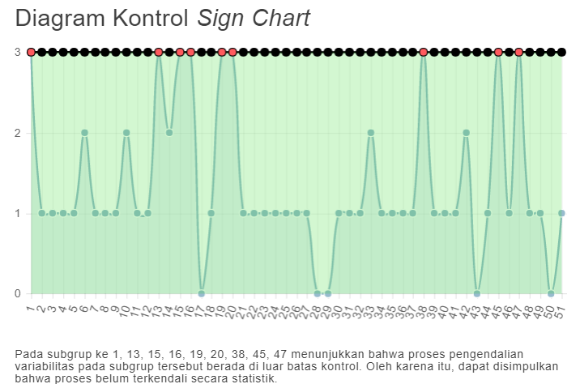
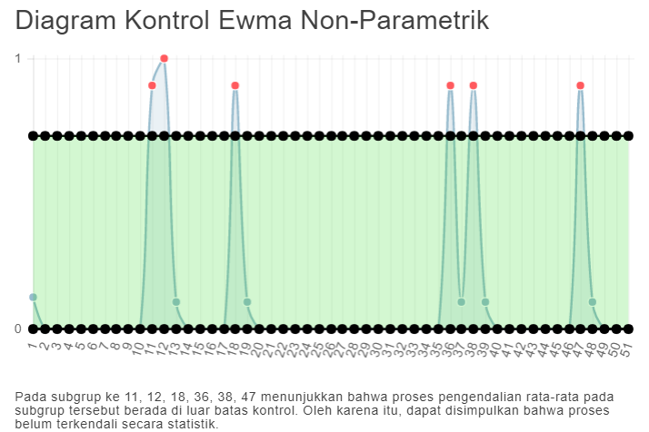

INTRODUCTION
Aplikasi ini digunakan jika data tidak berdistribusi normal.
Dalam aplikasi ini ada 2 proses yang dikendalikan yaitu proses pengendalian variabilitas dan rata-rata proses pengendalian variabilitas dengan menggunakan diagram kontrol sign chart dan proses pengendalian rata-rata menggunakan diagram kontrol EWMA Non-Parametrik.
Berikut beberapa cara untuk menggunakan aplikasi:
- Memasukkan spesifikasi perusahaan (harus berupa angka)
- Memasukkan jumlah sampel di tiap subgrup (harus berupa angka bulat)
- Browse file, memilih file .csv untuk diupload
- Klik tombol open
- Klik tombol submit
Contoh data csv dapat diunduh di sini.
Contoh cara menggunakan aplikasi:
- Memasukan spesifikasi perusahaan. Spesifikasi perusahaan adalah standar yang diberikan suatu perusahaan terhadap suatu produk.
Spesifikasi data Brix pada perusahaan ini adalah 39° Brix, maka memasukkan spesifikasi perusahaan sebesar 39.
- Memasukkan jumlah sampel di tiap subgrup. Jumlah sampel di tiap subgrup adalah banyaknya pengamatan yang diambil untuk setiap subgrup.
Contoh:
Dalam 1 minggu diambil 3 pengamatan pada minggu tersebut secara random, misal hari Senin, Rabu, Jumat atau Selasa, Kamis, Jumat.
Dalam 1 bulan diambil 5 pengamatan pada bulan tersebut secara random, misal tanggal 1, 8, 13, 21, 29 atau 3, 9, 15, 24, 30.
Pada contoh data Brix dalam satu minggu diambil tiga pengamatan, maka jumlah sampel di tiap subgrup diisi 3.
- Browse File, memilih file Brix.csv untuk diupload.
- Klik tombol open.
- Klik tombol submit
Diagram akan muncul setelah tombol submit di klik, apabila ada titik yang berada di atas UCL atau ada titik di bawah LCL, maka titik atau subgrup tersebut keluar dari batas kontrol atau out of control.
Pada data brix, hasil diagram sebagai berikut:
Diagram Kontrol Sign Chart

Pada subgrup ke 13, 15, 16, 19, 38, 45, dan 47 menunjukan bahwa proses pengendalian variabilitas pada subgrup tersebut di luar batas kontrol. Oleh karena itu dapat disimpulkan bahwa proses belum terkendali secara statistik.
Diagram EWMA Non-parametrik

Pada subgrup ke 11, 12, 18, 36, 38, dan 47 menunjukan bahwa proses pengendalian rata-rata pada subgrup tersebut berada di luar batas kontrol. Oleh karena itu dapat disimpulkan bahwa proses belum terkendali secara statistik.